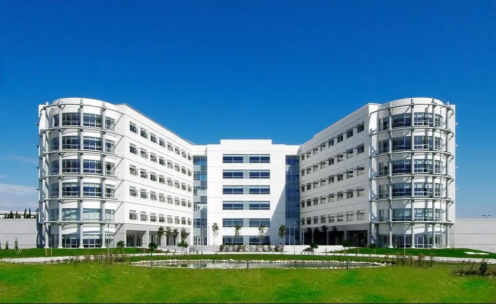
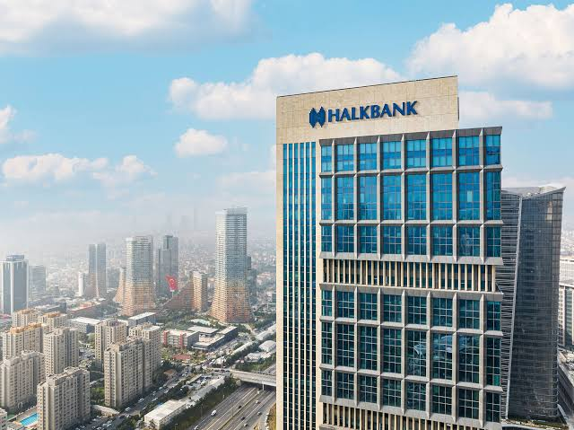
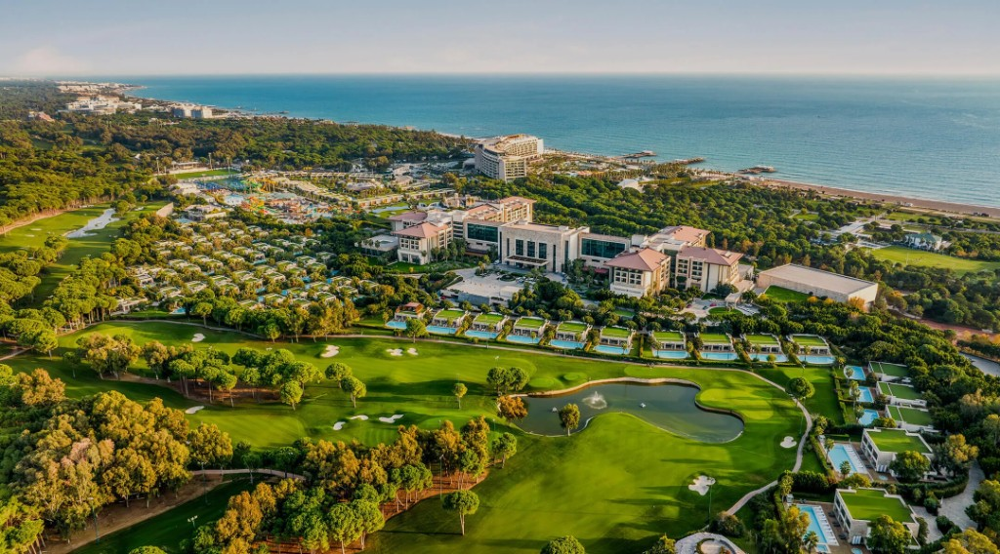
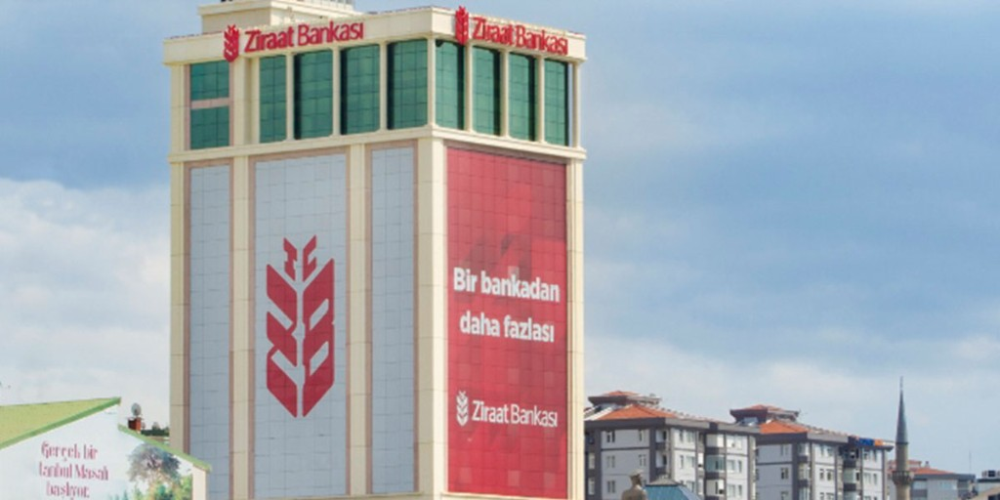
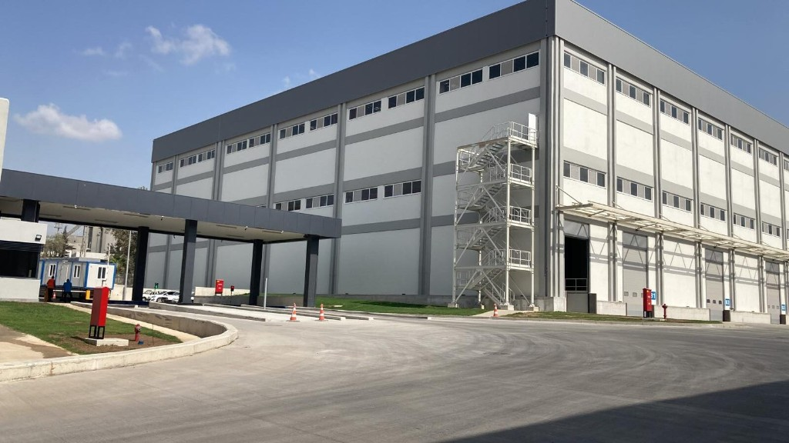
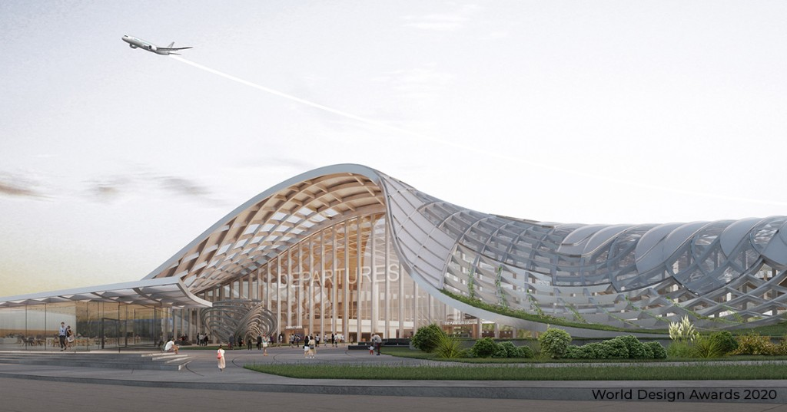

SıralaSort byСортировать
ÜlkeCountryСтрана
Bu ülkede henüz listelenen proje yok. No projects listed for this country yet. Для этой страны проектов пока нет.
 2007
2007
Bera OtelBera HotelОтель Bera
Antalya, TürkiyeAntalya, TurkeyАнталья, Турция
 2008
2008
Devlet Sahil Evleri TesisleriState Coastal ResidencesГосударственные прибрежные резиденции
Azerbaycan · 23.000 m²Azerbaijan · 23,000 m²Азербайджан · 23 000 м²
 2008
2008
Mega Rostov Alışveriş MerkeziMega Rostov Shopping CentreТорговый центр Mega Rostov
Rusya · 253.861 m²Russia · 253,861 m²Россия · 253 861 м²
 2011
2011
Savunma Bakanlığı Olağanüstü Hal BakanlığıMinistry of Defence & State of EmergencyМинистерство обороны и чрезвычайных ситуаций
TürkmenistanTurkmenistanТуркменистан
 2011
2011
Buz KöşküIce PalaceЛедовый дворец
Türkmenistan · 72.400 m²Turkmenistan · 72,400 m²Туркменистан · 72 400 м²
 2011
2011
Pamukyağı FabrikasıCottonseed Oil FactoryЗавод хлопкового масла
Türkmenistan · 22.000 m²Turkmenistan · 22,000 m²Туркменистан · 22 000 м²
 2011
2011
Deskty Mir Alışveriş MerkeziDeskty Mir Shopping CentreТорговый центр Deskty Mir
Türkmenistan · 9.841 m²Turkmenistan · 9,841 m²Туркменистан · 9 841 м²
 2012
2012
Uluslararası Petrol ve Gaz ÜniversitesiInternational Oil & Gas UniversityМеждународный нефтегазовый университет
Türkmenistan · 109.368 m²Turkmenistan · 109,368 m²Туркменистан · 109 368 м²
 2012
2012
Türkmenistan Polis AkademisiTurkmenistan Police AcademyПолицейская академия Туркменистана
Türkmenistan · 117.325 m²Turkmenistan · 117,325 m²Туркменистан · 117 325 м²
 2013
2013
Prezident OtelPresident HotelОтель President
Beyaz Rusya · 40.000 m²Belarus · 40,000 m²Беларусь · 40 000 м²
 2013
2013
Oyala Hükümet KonağıOyala Government BuildingПравительственное здание Oyala
Ekvator Ginesi · 23.750 m²Equatorial Guinea · 23,750 m²Экваториальная Гвинея · 23 750 м²
 2013
2013
Rixos Downtown OtelRixos Downtown HotelОтель Rixos Downtown
Antalya, TürkiyeAntalya, TurkeyАнталья, Турция
 2017
2017
Akasya ApartmanıAkasya ApartmentЖилой дом Akasya
İstanbul, Türkiye · 3.320 m²Istanbul, Turkey · 3,320 m²Стамбул, Турция · 3 320 м²
 2016
2016
Marmermer PlazaMarmermer PlazaMarmermer Plaza
İstanbul, TürkiyeIstanbul, TurkeyСтамбул, Турция
 2017
2017
Arı ApartmanıArı ApartmentЖилой дом Arı
İstanbul, Türkiye · 1.750 m²Istanbul, Turkey · 1,750 m²Стамбул, Турция · 1 750 м²
 2018
2018
Ege Üniversitesi HastanesiEge University HospitalБольница университета Ege
İzmir, TürkiyeIzmir, TurkeyИзмир, Турция
 2017
2017
Koru ApartmanıKoru ApartmentЖилой дом Koru
İstanbul, TürkiyeIstanbul, TurkeyСтамбул, Турция
 2017
2017
Güven ApartmanıGüven ApartmentЖилой дом Güven
İstanbul, TürkiyeIstanbul, TurkeyСтамбул, Турция
 2017
2017
THY Bakım Onarım ve Modifikasyon MerkeziTurkish Airlines MRO CentreЦентр ТО Turkish Airlines
İstanbul, Türkiye · 372.000 m²Istanbul, Turkey · 372,000 m²Стамбул, Турция · 372 000 м²
 2017
2017
Kempinski Residences Barbaros Reserve BodrumKempinski Residences Barbaros Reserve BodrumKempinski Residences Barbaros Reserve Bodrum
Bodrum, Türkiye · 11.000 m²Bodrum, Turkey · 11,000 m²Бодрум, Турция · 11 000 м²
 2020
2020
Curaçao Tıp MerkeziCuraçao Medical CenterМедицинский центр Кюрасао
Willemstad, CuraçaoWillemstad, CuraçaoWillemstad, Кюрасао
 2016
2016
Ref PlazaRef PlazaRef Plaza
İstanbul, Türkiye · 4.073 m²Istanbul, Turkey · 4,073 m²Стамбул, Турция · 4 073 м²
 2015
2015
Ikot Ekpene OtelIkot Ekpene HotelОтель Ikot Ekpene
NijeryaNigeriaНигерия
 2015
2015
Kuriş KuleKuriş TowerБашня Kuriş
İstanbul, Türkiye · 60.000 m²Istanbul, Turkey · 60,000 m²Стамбул, Турция · 60 000 м²
 2015
2015
Park Inn by Radisson İstanbul Atatürk HavalimanıPark Inn by Radisson Istanbul Atatürk AirportPark Inn by Radisson — аэропорт Ататюрка, Стамбул
İstanbul, TürkiyeIstanbul, TurkeyСтамбул, Турция

2005Anadolu Sağlık MerkeziAnadolu Medical CenterМедицинский центр Anadolu
Gebze, Türkiye · 50.000 m²Gebze, Turkey · 50,000 m²Гебзе, Турция · 50 000 м²
 2020
2020
Bişkek Vefa Center AVMBishkek Vefa Center MallТЦ Vefa Center, Бишкек
Bişkek, KırgızistanBishkek, KyrgyzstanБишкек, Киргизия
 2020
2020
Duşanbe Vefa Center AVMDushanbe Vefa Center MallТЦ Vefa Center, Душанбе
Duşanbe, TacikistanDushanbe, TajikistanДушанбе, Таджикистан

2025Halkbank Genel MüdürlükHalkbank HeadquartersШтаб-квартира Halkbank
İstanbul, TürkiyeIstanbul, TurkeyСтамбул, Турция
 2020
2020
Rixos Pera OtelRixos Pera HotelОтель Rixos Pera
İstanbul, TürkiyeIstanbul, TurkeyСтамбул, Турция

2023Regnum Carya Golf ve Spa ResortRegnum Carya Golf & Spa ResortRegnum Carya Golf & Spa Resort
Antalya, TürkiyeAntalya, TurkeyАнталья, Турция

2014Ziraat Bankası Maltepe Merkez BinasıZiraat Bank Maltepe HeadquartersГлавное здание Ziraat Bank, Maltepe
Maltepe, İstanbul, TürkiyeMaltepe, Istanbul, TurkeyMaltepe, Стамбул, Турция

2024Mersin Şişecam FabrikasıMersin Şişecam FactoryЗавод Şişecam, Мерсин
Mersin, TürkiyeMersin, TurkeyМерсин, Турция
 2019
2019
İstanbul Panorama EvleriIstanbul Panorama ResidencesЖилой комплекс Panorama, Стамбул
Bağcılar, İstanbul, Türkiye · 95.000 m²Bağcılar, Istanbul, Turkey · 95,000 m²Bağcılar, Стамбул, Турция · 95 000 м²

2019Taşkent Uluslararası HavalimanıTashkent International AirportМеждународный аэропорт Ташкента
Taşkent, ÖzbekistanTashkent, UzbekistanТашкент, Узбекистан